[Part I] - Login Form
Pengantar
Acapkali berbagai macam situs website menawarkan kepada kita untuk bergabung sebagai komunitas, anggota, atau peserta. Sebagai contoh, LMS Kulino yang tengah kita pakai saat ini mewajibkan user-nya untuk masuk ke dalam sistem tersebut dengan menggunakan username dan password yang telah terdaftar. Apabila user belum terdaftar, maka mereka akan diarahkan menuju formulir registrasi untuk melakukan pendaftaran akun baru pada laman tersebut.
Dari formulir registrasi dan login tersebut, pada studi kasus kali ini kita akan menelaah hal-hal apa sajakah yang dibutuhkan untuk membangun komponen yang ada di dalam sistem registrasi serta login tersebut. Hal ini mencakup berbagai hal termasuk sessions, authentication, dan sebagainya di dalam modul ini. So, what are you waiting for? Let’s get started, Champ!
Merancang Database
First things first, yang perlu kita persiapkan adalah database. Buatlah database baru dengan nama account. Database tersebut nantinya akan kita gunakan dalam pembuatan studi kasus kita kali ini. Setelah berhasil dibuat, kita membuat tabel dengan nama usertable yang di dalamnya memuat id, name, email, password, code, dan status. Anda dapat membuatnya secara manual atau bisa juga salin kueri SQL berikut ini:
CREATE TABLE `usertable` (
`id` int(11) NOT NULL AUTO_INCREMENT,
`name` varchar(255) NOT NULL,
`email` varchar(255) NOT NULL,
`password` varchar(255) NOT NULL,
`code` mediumint(50) NOT NULL,
`status` text NOT NULL,
PRIMARY KEY (`id`)
) ENGINE=InnoDB DEFAULT CHARSET=utf8mb4;Koneksi ke Database
Masih ingat dengan prosedur pengkoneksian ke database phpMyAdmin? Ya, tentu saja, kita akan menerapkan konsep yang sama seperti studi kasus sebelumnya dalam hal ini. Namun apabila Anda lupa, Anda dapat menyalin kode berikut ini:
<?php
$host = "localhost";
$username = "root";
$password = "";
$database = "account";
$con = new mysqli($host, $username, $password, $database);
if ($con->connect_error) {
die("Connection failed: " . $con->connect_error);
}Membuat Formulir Registrasi
Langkah awal dari studi kasus ini adalah membuat formulir registrasi. Sangat sederhana hanya membutuhkan beberapa inputan data, seperti nama lengkap, email, password, dan konfirmasi ulang password. Gunakan konsep yang sama di saat pembuatan formulir studi kasus sebelumnya. Berikan nama file registrasi tersebut dengan nama signup-user.php.
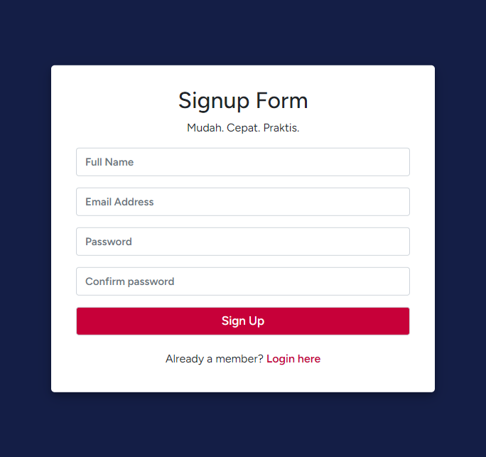
Sebagai identitas, berikan atribut dan value pada tiap <input> dengan parameter sebagai berikut:
| Komponen | Value |
|---|---|
| Nama Lengkap | name=“name” |
| name=“email” | |
| Password | name=“password” |
| Konfirmasi Password | name=“cpassword” |
| Button Signup | name=“signup” |
Selain itu, untuk penanganan error dari segala kemungkinan masalah yang dapat terjadi, salin kode berikut ini dengan menempatkannya setelah paragraf “Mudah. Cepat. Praktis.” dan sebelum kotak inputan pertama, yaitu Nama Lengkap.
<?php
if (count($errors) == 1) {
?>
<div class="alert alert-danger text-center" style="font-weight: 600;">
<?php
foreach ($errors as $showerror) {
echo $showerror;
}
?>
</div>
<?php
} elseif (count($errors) > 1) {
?>
<div class="alert alert-danger" style="font-weight: 600;">
<?php
foreach ($errors as $showerror) {
?>
<li><?php echo $showerror; ?></li>
<?php } ?>
</div>
<?php } ?>Membuat Halaman Login
Setelah halaman pendaftaran selesai dibuat, selanjutnya kita akan beralih ke halaman login (login-user.php). Pada halaman login ini cukup simple, karena kita hanya membutuhkan 2 inputan data, yaitu email dan password. Cara penyusunan halaman tersebut terbilang sama dengan halaman registrasi, yang membedakan hanya handling disaat error saja.
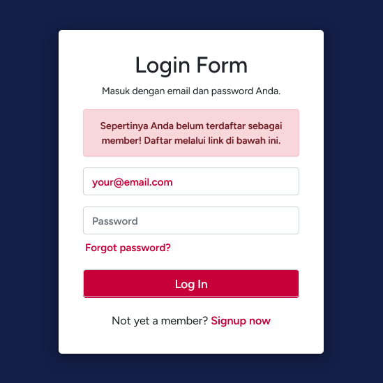
Sebagai identitas, berikan atribut dan value pada tiap <input> dengan parameter sebagai berikut:
| Komponen | Value |
|---|---|
| name=“email” | |
| Password | name=“password” |
| Button Login | name=“login” |
Untuk menangani permasalahan jika terjadi error, Anda dapat menyalin kode di bawah ini; harap letakkan kode berikut setelah paragraf “Masuk dengan email dan password Anda” dan sebelum kotak inputan email:
<?php
if (count($errors) > 0) {
?>
<div class="alert alert-danger text-center" style="font-weight: 600;">
<?php
foreach ($errors as $showerror) {
echo $showerror;
}
?>
</div>
<?php
}
?>Merancang Forgot Password
Di dalam container form login terdapat tautan “Forgot Password” atau “Lupa Kata Sandi”. Hal ini perlu kita lakukan guna apabila pengguna lupa terhadap kata sandi akun mereka. Sebelum memulai, perlu diketahui bahwa nantinya kita akan menerapkan konsep One-Time Password (OTP) untuk studi kasus ini.
Well then, mari kita buat file baru dengan nama forgot-password.php. Konsep penyusunan halaman mengikuti alur yang sama seperti halaman-halaman sebelumnya.
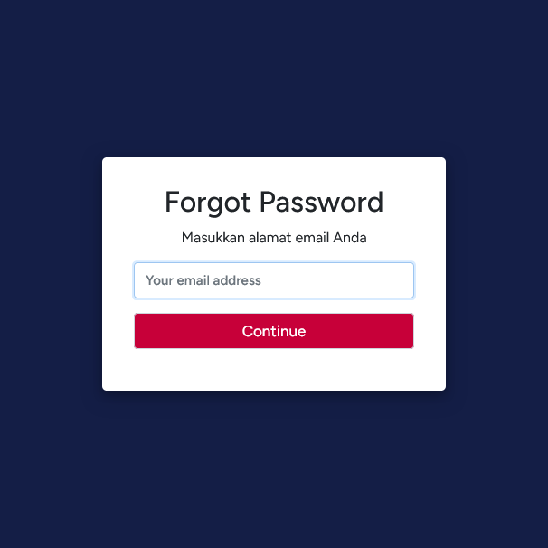
Berikan identitas pada tiap-tiap bagian, yaitu input-an alamat email dan button “Continue”. Untuk input-an email, name="email"; dan button “Continue”, name="check-email".
Pada halaman ini, input-an hanya berupa email dan email ini sebelumnya sudah harus terdaftar dalam sistem terlebih dahulu. Apabila email yang dimasukkan belum terdaftar, maka akan melemparkan alert atau notifikasi berupa “Akun email Anda belum terdaftar”. Praktisi dalam pembuatan kode halaman di atas dapat Anda susun sendiri atau bisa juga salin kode berikut ini:
<!DOCTYPE html>
<html lang="en">
<head>
<meta charset="UTF-8">
<title>Forgot Password</title>
<link rel="stylesheet" href="https://stackpath.bootstrapcdn.com/bootstrap/4.5.2/css/bootstrap.min.css">
<link rel="stylesheet" href="style.css">
</head>
<body>
<div class="container">
<div class="row">
<div class="col-md-4 offset-md-4 form">
<form action="forgot-password.php" method="POST" autocomplete="">
<h2 class="text-center">Forgot Password</h2>
<p class="text-center">Masukkan alamat email Anda</p>
<?php
if (count($errors) > 0) {
?>
<div class="alert alert-danger text-center" style="font-weight: 600;">
<?php
foreach ($errors as $error) {
echo $error;
}
?>
</div>
<?php
}
?>
<div class="form-group">
<input class="form-control" type="email" name="email" placeholder="Your email address" required value="<?php echo $email ?>">
</div>
<div class="form-group">
<input class="form-control button" type="submit" name="check-email" value="Continue">
</div>
</form>
</div>
</div>
</div>
</body>
</html>Menangani Reset Password
Setelah pengiriman alamat email melalui halaman forgot-password.php di atas, selanjutnya kita harus memasukkan kode OTP terlebih dahulu yang di mana kode tersebut akan kita dapatkan melalui alamat email. Sebelum itu, jikalau Anda belum pernah men-setting pengaturan Simple Mail Transfer Protocol (SMTP), harap perhatikan dengan saksama penjelasan berikut ini:
- Pergi ke dalam folder XAMPP Anda dan buka folder php
- Gulir ke bawah hingga Anda menemukan file php.ini, setelah itu buka file tersebut. (Lihat Figure 4)
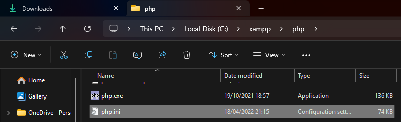
- Setelah itu, klik kanan pada mouse > Open with > pilih Notepad
- Di dalam file php.ini tersebut, cari ‘SMTP’ dengan shortcut CTRL + F (Lihat Table 1)
| 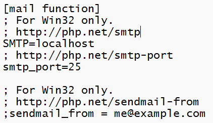 Sebelum |
| 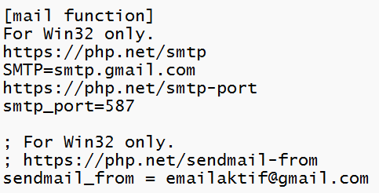 Sesudah |
Hapus tanda titik koma (;) pada tiap bagian-bagian yang diperlukan. Harap perhatikan dengan teliti tiap bagian yang dibutuhkan agar tidak menimbulkan error/kesalahan.
Untuk bagian
sendmail_fromdiisikan dengan alamat email aktif dan valid. Apabila Anda memiliki 2 akun email yang aktif, Anda dapat mempergunakan salah satunya.Selepas itu, gulir ke bawah sedikit, lalu Anda akan menemukan seperti pada Table 2 berikut ini:
| 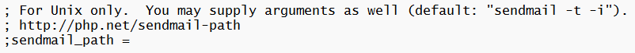 Sebelum |
| 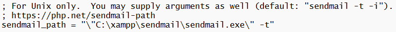 Sesudah |
- Hapus titik koma (;) pada bagian
sendmail_path, lalu isikan dengan path/direktori yang sesuai dengan direktori XAMPP pada perangkat Anda atau Anda dapat menyalin direktori berikut ini:
"\"C:\xampp\sendmail\sendmail.exe\" -t"Jangan lupa untuk disimpan (CTRL + S) kemudian tutup.
Selanjutnya, kita beralih ke folder sendmail (C:/xampp/sendmail) dan buka file sendmail.ini
Pada file tersebut, Anda akan menemukan
smtp_server=mail.mydomain.com, ganti isian daripadasmtp_servermenjadismtp_server=smtp.gmail.com.Lalu, di bawahnya terdapat
smtp_port=25, ganti isian daripadasmtp_portmenjadismtp_port=587.Selanjutnya gulir ke bawah, hingga Anda menemukan
error_logfile=error.logdandebug_logfile=debug.log. Hapus titik koma (;) pada bagian depan kedua kode tersebut (Lihat Figure 5)
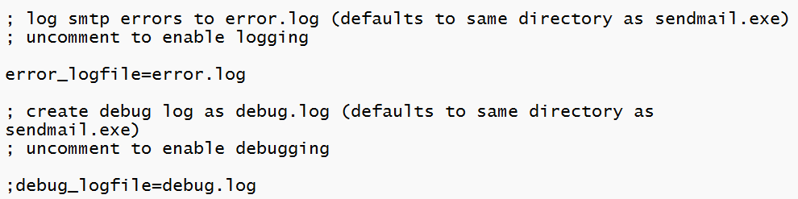
- Setelah itu gulir ke bawah lagi, lalu Anda akan menemukan
auth_username,auth_password, danforce_sender. Khususauth_usernamedanforce_senderisikan dengan alamat email Anda yang aktif dan valid (Lihat Figure 6)
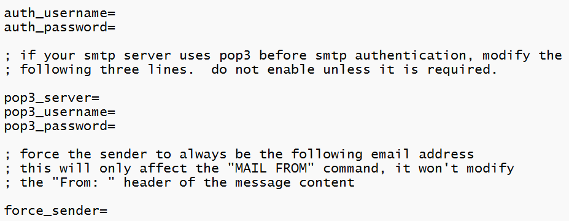
Selanjutnya teruntuk
auth_passworddapat Anda isikan dengan kombinasi password 16-karakter yang Anda dapatkan dari alamat email Google Account yang Anda isikan di bagianauth_usernamedanforce_sender. Lantas bagaimana caranya?Pergi ke https://myaccount.google.com/. Harap diperhatikan Anda wajib menggunakan akun email yang sama dengan alamat email yang telah Anda isikan pada Langkah ke-14.
Pada laman tersebut, terdapat panel yang berada di sisi kiri layar. Dari halaman “Beranda” atau “Home” beralihlah ke halaman “Keamanan” atau “Security”. Pada halaman tersebut, gulir ke bawah lalu Anda akan menemukan “Cara Anda login ke Google” atau “How you sign in to Google”
Pada bagian tersebut, klik “Verifikasi 2 Langkah” atau “2-Step Verification”. Apabila diminta, masukkan password akun email Anda, lalu Anda akan diminta untuk memverifikasi via Gmail atau nomor telepon dengan menggunakan kode verifikasi, contoh G-123456. Harap ikuti prosedur yang ada pada laman tersebut!
Setelah berhasil masuk, Anda akan melihat tampilan laman seperti berikut ini:
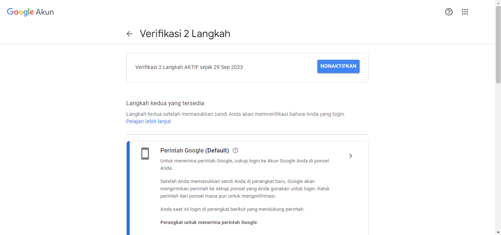
- Di dalam halaman tersebut, gulir ke paling bawah, hingga Anda menemukan section “Sandi aplikasi” atau “App password”. Klik section tersebut, lalu Anda akan melihat tampilan laman seperti berikut ini:
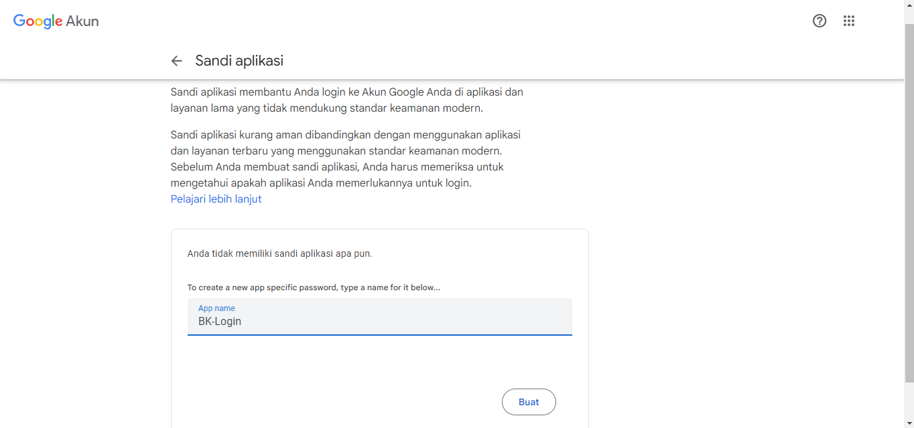
Pada kotak yang ada di bawah, silakan Anda membuat sandi aplikasi yang baru dengan cara mengisikan judul aplikasi yang ingin Anda buat, sebagai contoh “BK-Login”. Setelah itu, klik button “Buat”
Akan muncul pop-up, seperti pada gambar di bawah ini (Lihat Figure 9). Pada popup tersebutlah Anda mendapatkan password 16-karakter yang dapat Anda copy dan paste dan Anda isikan ke bagian
auth_passworddi file sendmail.ini (Lihat Figure 6)
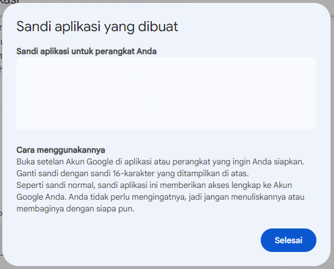
- Anda sudah siap!
Pengaturan konfigurasi SMTP Anda telah siap, sekarang kita akan melanjutkan proses pembuatan halaman verifikasi kode OTP. Buat file baru dan beri nama reset-code.php, di sini kode OTP akan berperan dalam memverifikasi pembuatan password baru atau saat lupa password atau yang lainnya. Seperti apakah bentuk dari halaman tersebut? Halaman reset-code.php sangatlah sederhana sekali seperti pada gambar berikut:
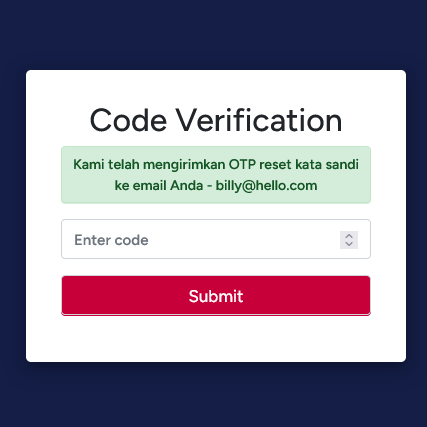
Pada halaman tersebut berikan identitas pada tiap-tiap bagian. Untuk kotak input-an kode OTP berikan atribut dan value → name="otp" dan untuk button “Submit” → name="check-reset-otp".
Salah satu hal yang perlu diperhatikan dalam halaman ini adalah sessions yang diambil dari alamat email yang terdaftar pada sistem. Oleh karena itu, kita perlu melampirkan sessions di atas halaman. Salin kode berikut dan letakkan di atas halaman PHP Anda:
<?php
$email = $_SESSION['email'];
if ($email == false) {
header('Location: login-user.php');
}
?>Setelah itu, buatlah kode untuk menampilkan informasi baik itu kode OTP telah dikirimkan melalui email atau notifikasi kemungkinan terjadinya error. Untuk penanganan error, gunakan cara/konsep yang sama seperti halnya pada halaman forgot-password.php. Sedangkan untuk menampilkan notifikasi bahwa kode OTP telah dikirimkan ke email, Anda dapat menyalin kode berikut ini:
<?php
if (isset($_SESSION['info'])) {
?>
<div class="alert alert-success text-center">
<?php echo $_SESSION['info']; ?>
</div>
<?php
}
?>Akhir Bagian I
Selamat Anda telah berhasil menyusun studi kasus hingga pada tahap ini! Harap diingat perjalanan kita masih panjang. Silakan melanjutkan praktik studi kasus ini ke Bagian II. Break a leg, Champ!